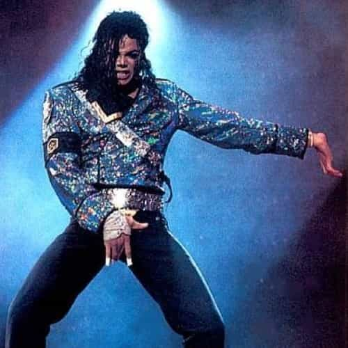
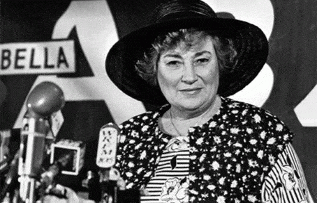

< < < Back
How Modern Feminists Are Not That Different From Michael Jackson – Return Of Kings
I’ll go out on a limb and say most feminists aren’t that bad. This means the Blue Pill types who believe it’s only about fairness and equality. They simply need a remedial education about what feminism really means.
The ones who are rotten to the core are the radical feminists. Mostly these fruitcakes include SJWs, the professors who brainwashed those kids, and the whack-job feminist theoreticians. They claim to speak for all women, but how qualified are they? Let’s compare these fruitcakes to Michael Jackson—one of the most eccentric recent celebrities—and see who better resembles ordinary people.
Appearance

At least overdosing on Propofol is faster than overdosing on cheeseburgers.
The Gloved One: The stage outfits were pretty flashy, and I have to wonder what he was thinking with the drum major outfit. Still, the rhinestone overload was understandable, given his profession. The major question is, what’s the deal with just one glove?
MJ started out looking pretty normal. Later, he hit it too hard with the skin bleaching and especially the plastic surgery. By the end, he looked far different from his natural appearance.
Radical feminists: First of all, a large—if you’ll pardon the expression—number of them tend to be a pudgy. (I don’t mind big gals, up to a certain point, but being snotty is always a deal-breaker. It’s ridiculous when a huge ego accompanies a huge body.) Other than that, they dress frumpily, while normal women are semi-obsessed with looking sharp. And what’s with the problem glasses?
Hair dyed unnatural colors is common, as are Whitey-dreads or shaving off half their heads, etc. This puts them outside the range of normal human appearance. Still, it’s not the worst thing in the world; with time, they can start over.
Tattoos, also common among them, are really getting into iffy territory. They’re permanent, and frequently low-quality. This is also why facial piercings and—even worse—other “body modifications” are way beyond the pale. That’s symptomatic of profound carelessness or even self-loathing.
Verdict: Michael Jackson looked like a Martian, and so do most fruitcake feminists. At least he was slimmer and better dressed than them.
Sexuality

Not exactly grabbing ’em by the pussy.
The Gloved One: Michael Jackson was known for projecting sexuality, but in what direction was the big mystery. From the stroke material inventoried at Neverland Ranch, he likely was a switch hitter leaning a bit more toward the gay side. Bisexuality (whether open or hinted at) wasn’t all that uncommon in the music scene back then. Whether he ever had gay sex is questionable, as is whether he ever had straight sex.
The real scandal was the allegation that he was into kids. Some believed there was too much smoke for there not to be any fire; others believed it was just bottom-feeder lawyers out to get a deep-pockets celebrity whose eccentricities made him vulnerable. There were many things that seemed pretty odd, but nothing damning enough to stick in court. All told, it’s sort of like today’s Pizzagate; the difference being that the authorities back then investigated and took action.
Radical feminists: Their sexuality is all over the place. Several have said “feminism is the theory, lesbianism is the practice” or other words to that effect. Bisexuality is pretty common too. Believe it or not, some are even straight, though you sort of pity their partners. Some fruitcake feminists are “all aboard the Cock Carousel” types; others are pickled prunes. Some embrace the dozens of new gender identities invented recently; others call bullshit on that.
I say that sex with kids is absolutely wrong, but not all feminists would agree. Andrea Dworkin once thought parent-child incest was good; later she considered all sex bad. Eve Ensler’s Vagina Monologues includes an item called “The Little Coochie Snorcher That Could” (I’m not making this up). The original version features a 13 year old character seduced into lesbian sex by a 24 year old, concluding “If it was rape, it was a good rape”. Later, that embarrassing line got deleted and her age was changed to 16; still jailbait in most places.
Verdict: For MJ and fruitcake feminists, the picture is way too confused to draw definitive conclusions, but pretty weird overall.
Mental issues
The Gloved One: MJ suffered from arrested development, which he attributed to overwork during the Jackson Five days. Further, suddenly being thrust into stardom and wealth often changes people, not always for the better. At first, he proudly paraded his eccentricities, but later came to regret it, bitterly complaining about tabloids calling him “Wacko Jacko”. On the positive side, his song “Man in the Mirror” strikes a hopeful note about fixing one’s life. Like his father-in-law, prescription drugs were ultimately his undoing.
Radical feminists: They have arrested development too, unable to handle disagreements without becoming “triggered” (enraged). Earlier I’ve noted that two big-name feminists (Firestone and Solanas) were paranoid schizophrenics, and another (Dworkin) was deeply neurotic. I haven’t exhaustively documented all the fruitcakes, mooncalves, and psych med junkies amongst the Sisterhood’s leading lights, but overall, do they sound like well-adjusted people?
It’s sort of understandable; their mission is to spread discord and screw up the social environment, and their incessant negativity rubs off on them. Their failure to come to terms with basic biology is a form of reality denial. The SJWs are the absolute worst, who consider their mental problems a badge of honor.
Verdict: MJ and the feminists weren’t so different; lots of loose screws all around. Interestingly, he had it together better than some prominent feminists. It averages out pretty evenly.
Ethnicity

Just cut it out with this stuff; you’re ruining your reputation
The Gloved One: MJ was a Black pop star wildly successful with White audiences, sort of a unifying figure. Still, he appears to have had a troubled relationship with his own identity, as his changes in appearance show. Calling his fellow Blacks “spabooks” is further evidence.
Radical feminists: Feminism is predominantly Jewish, one of several troubling phenomena as Roosh noted. In my personal experience, most Jews are decent folks, and I have no problem with those ones. Unfortunately, some others are still stuck in 17th century us-versus-them mentality, a blight on their own community. Those ones often have a love-hate relationship with their own culture, and an even more troubled relationship with broader society. They consider themselves as outsiders, despite many climbing to high echelons of power and influence. Those types started modern feminism.
Some are from other backgrounds, of course. Notably, there are a smaller number of Black feminists, who started the “intersectionality” business. These ones aren’t exactly about everyone getting along together. For example, there was endless crabbing about how the “Day Without A Woman” protest would be all a bunch of privileged White feminists who could afford to play hooky from their jobs. Nevertheless, these same White feminists were basically told by the organizers to sit down and shut up. So much for inclusiveness!
Verdict: Neither Michael Jackson nor most feminists represent majority demographics. Still, MJ’s Black heritage wasn’t a barrier to bringing together fans of all backgrounds. The ethnic group contributing the most to feminism is far closer related to the USA’s founding population, yet those (((fruitcakes))) irrationally hang onto ancient grudges.
Ideology
The Gloved One: He loosely embodied warm, fuzzy universalism, part of bringing people together. I may be deplorable, but I can’t fault him for that. I’d be on board with it too, if multiculturalism wasn’t a disaster. He created the Heal the World Foundation. He also was deeply concerned about the environment, and made some good points.
Radical feminists: Modern feminism (like other expressions of cultural Marxism) is about creating divisiveness, so it’s no surprise that cracks are appearing in their coalition. Most people are unaware that second-wave feminism was heavily influenced by Communism, with the goal of wrecking families to disrupt society. As the saying goes:
The issue is never the issue. The issue is always the revolution.
At least they had a conscious goal. More recent brands of feminism are a little worse, more about resentment and aimless nihilism.
Verdict: MJ’s politics amounted to a vague, feel-good liberalism, pretty innocuous unlike many celebrities then and especially now. Fruitcake feminists, though, hate their own society and are hell-bent on wrecking it.
In summary

Time to have a chat with the man in the mirror
Radical feminists claim to speak for all women, while being no more representative of real women than Michael Jackson was a typical guy. On average, they have some other things in common with MJ: they look weird, and entirely by choice; they have an odd, androgynous sexuality; and they have more issues than National Geographic.
However, MJ built bridges to the majority, while feminists nurture old resentments. Also, his politics were pretty inoffensive, but feminists are crabby would-be revolutionaries. Finally, the Gloved One had cool moments, but feminists are tedious and argumentative. All told, those fruitcakes are more wacko than Jacko.
Read more: 9 Types Of Feminists And How To Counter Them